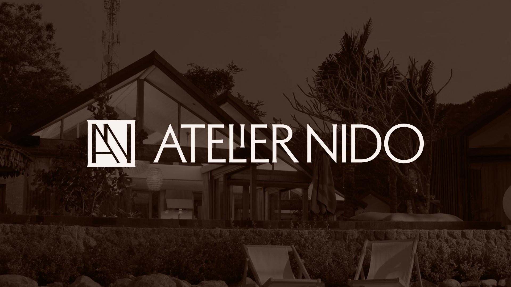
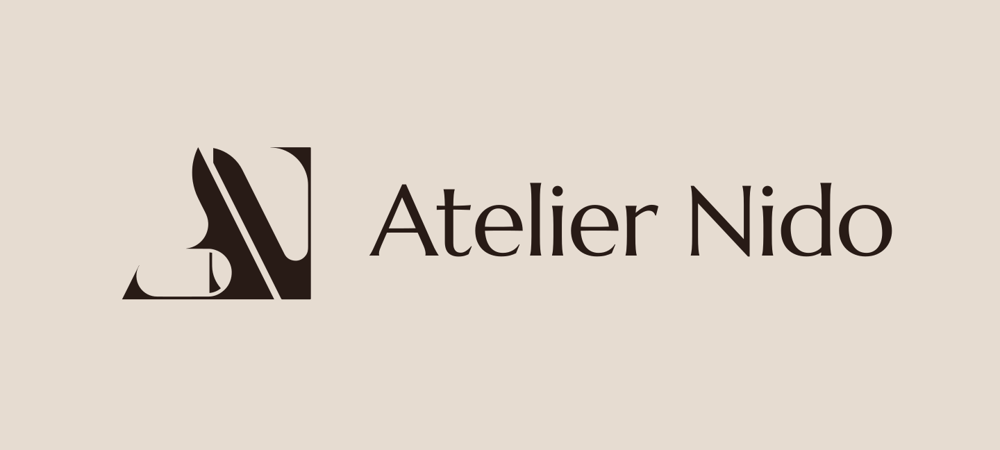
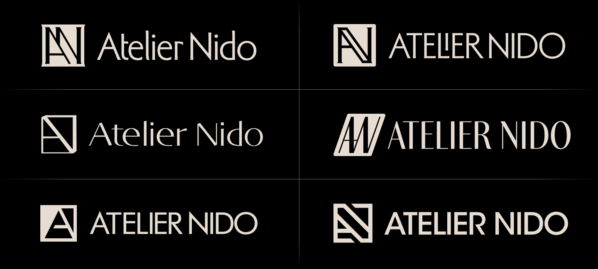
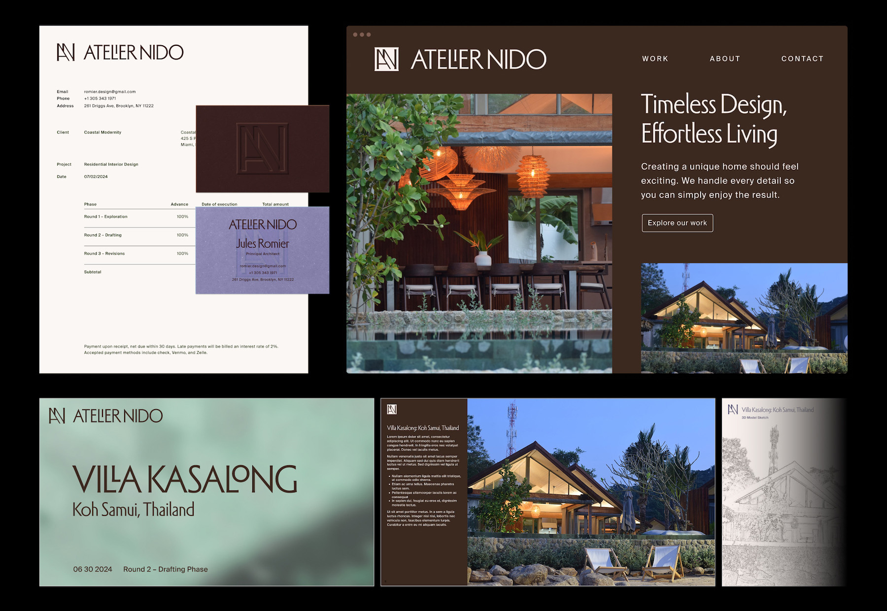

Atelier Nido Rebrand
A refreshed wordmark, monogram and collateral system for a luxury architecture studio.

Background
Atelier Nido is an architecture studio led by Jules Romier. With over a decade of experience in luxury residential and architectural design, Romier has shaped projects ranging from Hamptons estates to Miami interiors and boutique island retreats.
Project Overview
Romier approached me to refresh his brand to celebrate the maturing and growth of his studio over the past year. The original logo featured a high-contrast monogram accompanied by a humanist typeface. I looked to improve the monogram's legibility across various sizes and applications.

My process began with sketching out a wide range of monogram styles. As a luxury architecture studio, I wanted to evoke a timeless elegance.
I took inspiration from classic serif and script-based typefaces, authoritative slab serif monograms, all the way to vintage humanist sans-serif typefaces.

The final logo combined the first and second options. Romier enjoyed the uppercase version of the typeface Adelia, with its unique "LI" ligature that creates a special moment of interest in the wordmark.
I created an accompanying monogram inspired by the diagonal overlapping rafters found on Romier's Villa Kasalong building. The logomark also references Adelia's tiny serifs, giving a nod to classical humanist fonts while maintaining a contemporary sensibility.

I extended the brand into multiple forms of collateral including stationery, business cards, a slide deck template, totes, and a website landing page.
